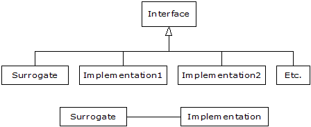

Fronting for an Implementation¶
Both Proxy and State provide a surrogate class that you use in your code; the real class that does the work is hidden behind this surrogate class. When you call a method in the surrogate, it simply turns around and calls the method in the implementing class. These two patterns are so similar that the Proxy is simply a special case of State. One is tempted to just lump the two together into a pattern called Surrogate, but the term “proxy” has a long-standing and specialized meaning, which probably explains the reason for the two different patterns.
The basic idea is simple: from a base class, the surrogate is derived along with the class or classes that provide the actual implementation:
When a surrogate object is created, it is given an implementation to which to send all of the method calls.
Structurally, the difference between Proxy and State is simple: a Proxy has only one implementation, while State has more than one. The application of the patterns is considered (in Design Patterns) to be distinct: Proxy is used to control access to its implementation, while State allows you to change the implementation dynamically. However, if you expand your notion of “controlling access to implementation” then the two fit neatly together.
Proxy¶
If we implement Proxy by following the above diagram, it looks like this:
# Fronting/ProxyDemo.py
# Simple demonstration of the Proxy pattern.
class Implementation:
def f(self):
print("Implementation.f()")
def g(self):
print("Implementation.g()")
def h(self):
print("Implementation.h()")
class Proxy:
def __init__(self):
self.__implementation = Implementation()
# Pass method calls to the implementation:
def f(self): self.__implementation.f()
def g(self): self.__implementation.g()
def h(self): self.__implementation.h()
p = Proxy()
p.f(); p.g(); p.h()
It isn’t necessary that Implementation have the same interface as Proxy; as long as Proxy is somehow “speaking for” the class that it is referring method calls to then the basic idea is satisfied (note that this statement is at odds with the definition for Proxy in GoF). However, it is convenient to have a common interface so that Implementation is forced to fulfill all the methods that Proxy needs to call.
Of course, in Python we have a delegation mechanism built in, so it makes the Proxy even simpler to implement:
# Fronting/ProxyDemo2.py
# Simple demonstration of the Proxy pattern.
class Implementation2:
def f(self):
print("Implementation.f()")
def g(self):
print("Implementation.g()")
def h(self):
print("Implementation.h()")
class Proxy2:
def __init__(self):
self.__implementation = Implementation2()
def __getattr__(self, name):
return getattr(self.__implementation, name)
p = Proxy2()
p.f(); p.g(); p.h();
The beauty of using __getattr__( ) is that Proxy2 is completely generic, and not tied to any particular implementation (in Java, a rather complicated “dynamic proxy” has been invented to accomplish this same thing).
State¶
The State pattern adds more implementations to Proxy, along with a way to switch from one implementation to another during the lifetime of the surrogate:
# Fronting/StateDemo.py
# Simple demonstration of the State pattern.
class State_d:
def __init__(self, imp):
self.__implementation = imp
def changeImp(self, newImp):
self.__implementation = newImp
# Delegate calls to the implementation:
def __getattr__(self, name):
return getattr(self.__implementation, name)
class Implementation1:
def f(self):
print("Fiddle de dum, Fiddle de dee,")
def g(self):
print("Eric the half a bee.")
def h(self):
print("Ho ho ho, tee hee hee,")
class Implementation2:
def f(self):
print("We're Knights of the Round Table.")
def g(self):
print("We dance whene'er we're able.")
def h(self):
print("We do routines and chorus scenes")
def run(b):
b.f()
b.g()
b.h()
b.g()
b = State_d(Implementation1())
run(b)
b.changeImp(Implementation2())
run(b)
You can see that the first implementation is used for a bit, then the second implementation is swapped in and that is used.
The difference between Proxy and State is in the problems that are solved. The common uses for Proxy as described in Design Patterns are:
- Remote proxy. This proxies for an object in a different address space. A remote proxy is created for you automatically by the RMI compiler rmic as it creates stubs and skeletons.
- Virtual proxy. This provides “lazy initialization” to create expensive objects on demand.
- Protection proxy. Used when you don’t want the client programmer to have full access to the proxied object.
- Smart reference. To add additional actions when the proxied object is accessed. For example, or to keep track of the number of references that are held for a particular object, in order to implement the copy-on-write idiom and prevent object aliasing. A simpler example is keeping track of the number of calls to a particular method.
You could look at a Python reference as a kind of protection proxy, since it controls access to the actual object on the heap (and ensures, for example, that you don’t use a null reference).
[[ Rewrite this: In Design Patterns, Proxy and State are not seen as related to each other because the two are given (what I consider arbitrarily) different structures. State, in particular, uses a separate implementation hierarchy but this seems to me to be unnecessary unless you have decided that the implementation is not under your control (certainly a possibility, but if you own all the code there seems to be no reason not to benefit from the elegance and helpfulness of the single base class). In addition, Proxy need not use the same base class for its implementation, as long as the proxy object is controlling access to the object it “fronting” for. Regardless of the specifics, in both Proxy and State a surrogate is passing method calls through to an implementation object.]]]

Table Of Contents
Previous topic
Building Application Frameworks